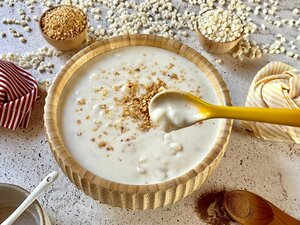

Canjica Simples

Coloque a canjica na panela, adicione o leite,o leite de coco e o leite condensado, misturando muito bem.
Leve ao fogo alto(cerca de 5 min),diminua o fogo e adicione canela,mexa sem parar (cerca de 5 a 10 min).
Transfira para um recipiente e ta pronta sua Canjica.
- Canjica
- Leite
- Leite de Coco
- Leite Condensado
- Canela em Pó
- Amendoim Triturado
Coloque a canjica na panela, adicione o leite,o leite de coco e o leite condensado, misturando muito bem.
Leve ao fogo alto(cerca de 5 min),diminua o fogo e adicione canela,mexa sem parar (cerca de 5 a 10 min).
Transfira para um recipiente e ta pronta sua Canjica.
Pão de Alho
Em uma travessa, misture bem todos os ingredientes.
Faça alguns cortes nos pães, passe a pasta de alho no meio de cada corte e por cima.
Asse na airfryer por (10 min a 200C).
E esta pronto seu Pão de Alho.
- Pães
- Maionese
- Dentes de Alho
- Manteiga
- Queijo Parmesão Ralado
- Queijo Mussarela ralado
Em uma travessa, misture bem todos os ingredientes.
Faça alguns cortes nos pães, passe a pasta de alho no meio de cada corte e por cima.
Asse na airfryer por (10 min a 200C).
E esta pronto seu Pão de Alho.
Strogonoff de Frango
Em uma panela, coloque a manteiga e refogue a cebola até ficar dourada.
Acrescente o frango, o sal. Misture bem e espere dourar.Assim que dourar,coloque água e espere ferver.
Quando boa parte da água evaporar,adicione o creme de leite e o ketchup.
E está pronto seu Strogonoff de Frango.
- Peito de frango em cubo
- Manteiga
- Cebola Picada
- Sal
- Água
- Creme de Leite
- Ketchup
Em uma panela, coloque a manteiga e refogue a cebola até ficar dourada.
Acrescente o frango, o sal. Misture bem e espere dourar.Assim que dourar,coloque água e espere ferver.
Quando boa parte da água evaporar,adicione o creme de leite e o ketchup.
E está pronto seu Strogonoff de Frango.